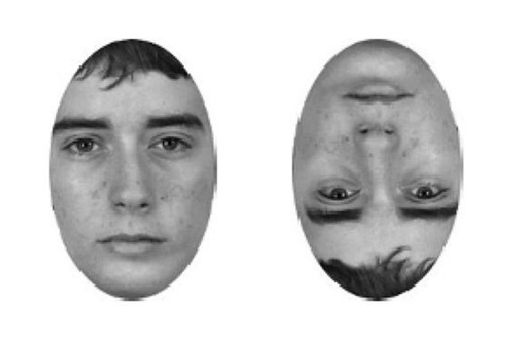
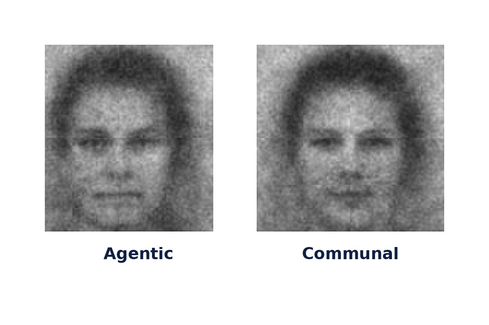
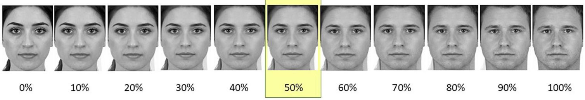
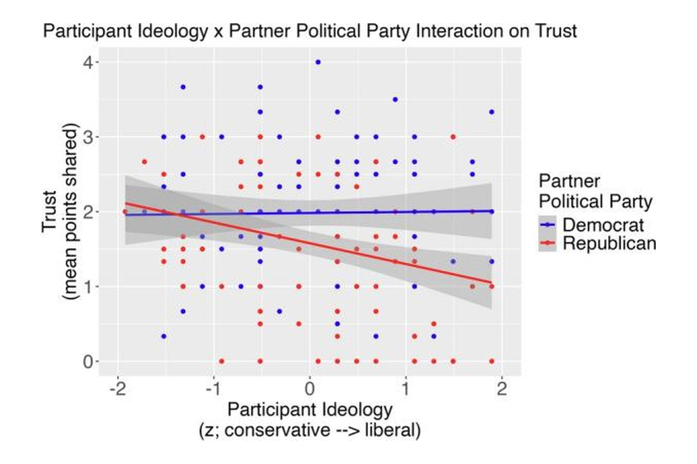
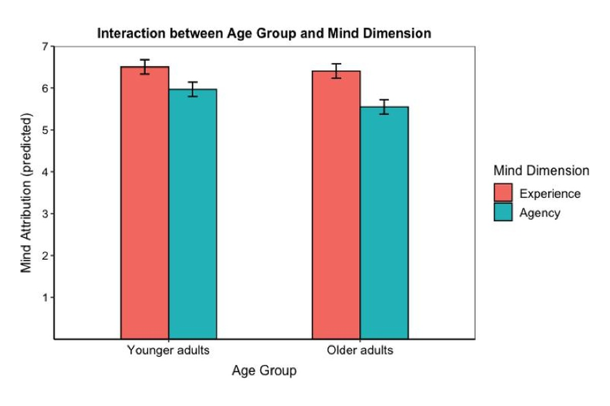

Research
Our research
Here are a few of the lab's current research areas, with figures from our recent papers.

01
Mind perception and humanization
Seeing someone as fully human means recognizing that they have a mind: thoughts, intentions, and complex feelings. Decoding emotions from faces is one route to that recognition, and some emotions (e.g., suspicion) are more complex to decode than others (e.g., anger). Our work shows that decoding complex emotions and humanization share face-processing mechanisms, and that inverting faces reduces sensitivity to complex emotions (Cassidy et al., 2022a, 2022b).
Whereas much research focuses on top-down influences like culture, we emphasize bottom-up perceptual factors, because interventions may fall short if they ignore them. We also study how context affects the minds people attribute to others, such as older adults (Cassidy & Ojeda, 2024).
02
Gender, faces, and expectations
People expect others' appearance to match gender stereotypes, and those expectations have consequences. Our work shows that trait inferences about warmth and competence produce gendered expectations of facial features (Liebenow et al., 2024a). Feminine facial features also influence how people judge women's leadership abilities (Liebenow et al., 2024b), which has implications for women's underrepresentation in leadership.
We also draw on person-perception mechanisms to understand anti-transgender bias (Liebenow & Cassidy, 2025).



03
Political partisanship and person perception
Political identity is a powerful social category that colors how people see one another. Our work shows that disclosing partisanship polarizes first impressions of faces (Cassidy et al., 2022). It also shows that perceiver and target partisanship change how facial trustworthiness affects liking (Malloy et al., 2023), and that perceived partisan threat affects even simple trust decisions (Cassidy et al., 2026).
Partisanship also changes how people evaluate real political figures. During the 2020 election, political ideology qualified how perceptions of Kamala Harris's communality affected evaluations of her when communal cues were present (Liebenow et al., 2022). We study how partisan cues combine with facial and gender cues to influence how people evaluate and trust others.
04
Lifespan changes and biased impressions
Not everyone thinks about and processes faces in the same way (Cassidy, Harding, et al., 2019; Cassidy, Hughes, et al., 2021; Cassidy & Krendl, 2019; Cassidy & Liebenow, 2021). One way this differential processing may emerge is through motivation to process certain cues over others, and comparing impressions across age offers an excellent way to test this. Unlike non-social domains, social perception is fairly stable with age, but older and younger adults differ in their motivation to process cues contributing to impressions.
For example, older and younger adults differ in how they learn whom to trust from social interactions (Seaman et al., 2023). Age also matters on the other side of the impression: context affects how much of a mind people attribute to older adults (Cassidy & Ojeda, 2024). Examining age differences across contexts (e.g., intergroup contexts) helps us understand the mechanisms underlying person perception.
